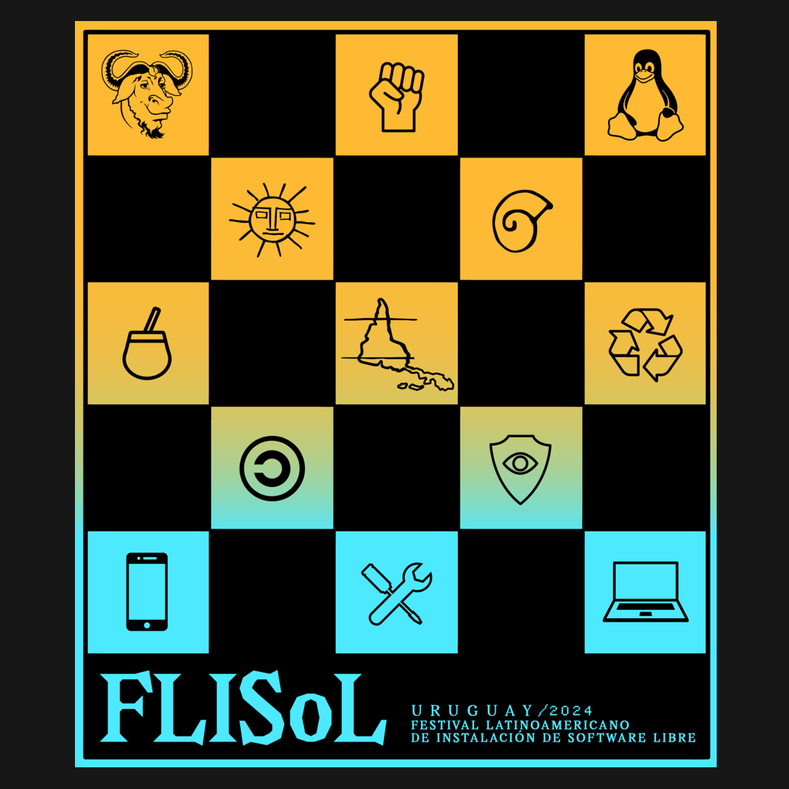
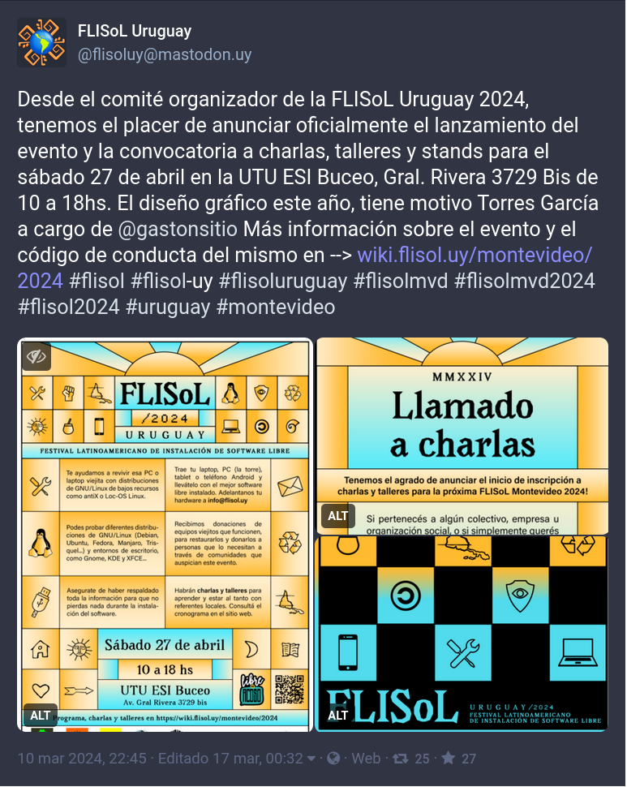
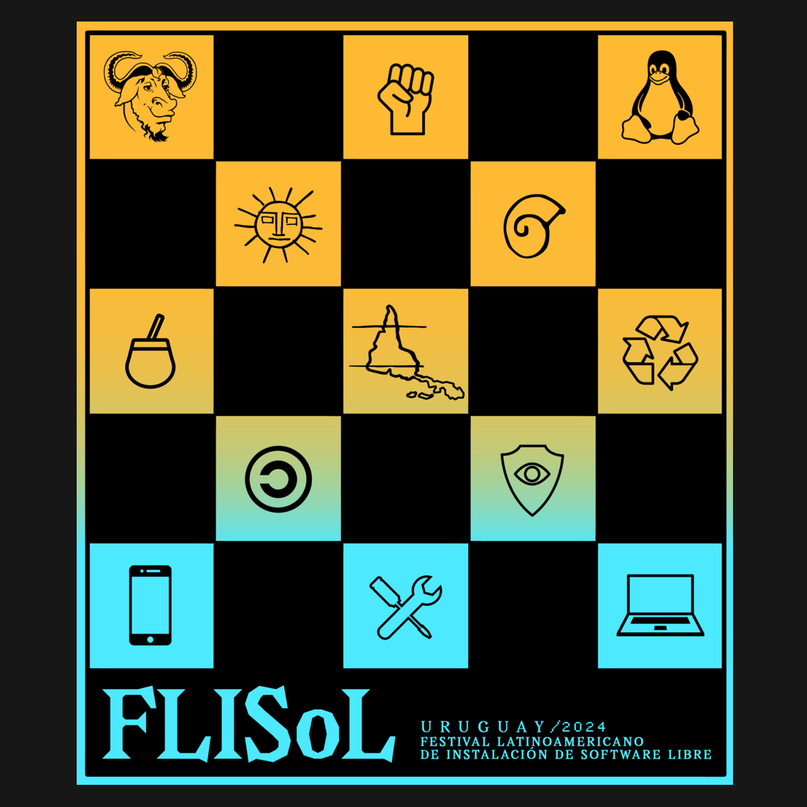
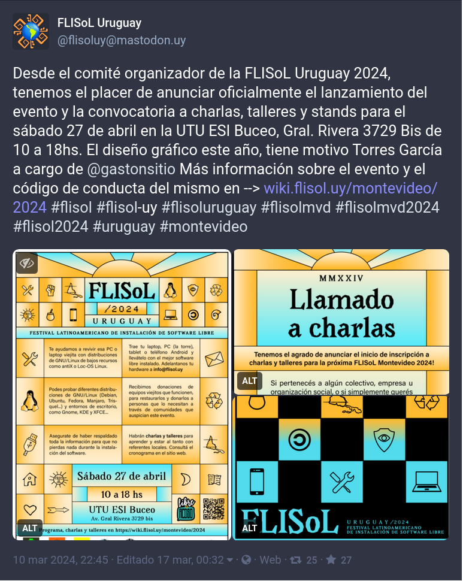

FLISoL Uruguay 2024

En mi más reciente deriva tecnológica empecé la transición hacia el software libre. Ya hace unos cuantos años que quería hacerlo pero nunca supe bien cómo, hasta que junté un poco de voluntad y me animé a investigar. Luego de instalar Linux Mint y probar el software libre de diseño disponible, llegué a las redes sociales libres como Mastodón. Allí encontré una comunidad que gira en torno a los principios del software libre, que entendí que es mucho más que una forma de uso o consumo de tecnología (como quizás nos tiene acostumbrado el ecosistema de Windows), sino que es una forma de producción, abierta y perteneciente a toda la humanidad.
Dentro de una de las tantas cosas que sigo leyendo y aprendiendo encontré a la organización del FLISoL en Montevideo, que es totalmente voluntaria y abierta. Me pareció una buena forma de concretar mi pasaje hacia el universo del software libre, colaborando con la comunicación del evento en fin de una mejor difusión del movimiento de software libre. Me acerqué con la propuesta y la recibieron con los brazos abiertos.
Desde el año 2005 el Festival Latinoamericano de Instalación de Software Libre (FLISoL) es el evento de difusión de Software Libre más grande en Latinoamérica. Su principal objetivo es promover el uso del software libre, dando a conocer al público en general su filosofía, alcances, avances y desarrollo. El evento está dirigido a todo tipo de público: estudiantes, académicos, empresarios, trabajadores, funcionarios públicos, entusiastas y aún a personas que no poseen mucho conocimiento informático.
A tal fin, las diversas comunidades locales de software libre (en cada país/ciudad/localidad), organizan simultáneamente eventos en los que se instala, de manera gratuita y totalmente legal, software libre en los dispositivos (sobre todo computadoras) que llevan los asistentes. Además, en forma paralela, se ofrecen charlas, ponencias y talleres, sobre temáticas locales, nacionales y latinoamericanas en torno al Software Libre, en toda su gama de expresiones: artísticas, académicas, empresariales y sociales. (Fuente FLISoL Uruguay)

La identidad gráfica está inspirada en la obra de Joaquín Torres García. Me pareció que se daba una buena relación entre la filosofía del software libre y los conceptos de la Escuela del Sur.
La composición es una referencia directa a las pinturas del Universalismo constructivo, organizada en una grilla de rectángulos y cuadrados. Los símbolos que aparecen tienen relación conceptual con los principios del software libre y la organización del FLISoL. La reparación y el mantenimiento de los equipos contra la obsolescencia programada; la soberanía, autonomía y alfabetización tecnológica; y la liberación y difusión del conocimiento en beneficio de todas las personas.
En esto aparecen símbolos representativos del movimiento de software libre, como Tux, el pingüino de Linux, o el ñú de GNU. Así como el copyleft, la atención a la privacidad y la América invertida como síntesis conceptual del movimiento.
Las fuentes utilizadas fueron:
- Open Sans para textos.
- Montevideo JTG. La busqué varios años hasta que la encontré. Hecha por OBRA (Alejandro Sequeira y Pablo Uribe) y encargada por la Intendencia de Montevideo hace unos 20 años.
Se diseñaron afiches para imprimir y para redes sociales, un estampado para serigrafía en remeras y otros varios como una diapositiva para las charlas, wallpapers para las instalaciones, y gráfica para objetos como tazas, stickers, entre otros.
Para más información visita el sitio web de FLISoL. Está hecha la invitación al evento y a sumarse a la comunidad del software libre. Te estamos esperando.


 


